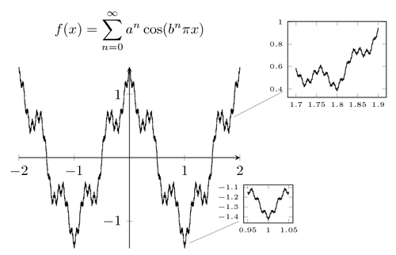

Karl Theodor Wilhelm Weierstrass nació el 31 de octubre de 1815 en Ostenfelde, Alemania. Fue hijo de Wilhelm Weierstrass, quien trabajaba como funcionario público, y Theodora Vonderforst. Desde joven mostró habilidad para las matemáticas, aunque inicialmente su padre quería que estudiara derecho y administración pública.
Comenzó estudios en la Universidad de Bonn, pero no destacó en esa etapa. Más tarde ingresó en la Academia de Münster, donde se formó como profesor de matemáticas. Durante varios años trabajó enseñando en escuelas secundarias, desarrollando sus investigaciones de manera casi independiente, sin ocupar un puesto universitario importante al inicio de su carrera.
Weierstrass fue matemático y es considerado uno de los padres del análisis matemático moderno. Su principal aportación fue dar una base rigurosa al cálculo, eliminando el uso impreciso de conceptos intuitivos. Formalizó de manera estricta la definición de límite utilizando el método conocido como la definición épsilon-delta (ε-δ), que todavía se enseña hoy en día en cursos de cálculo y análisis.
Uno de sus principales aportaciones es a creación de ejemplos de funciones continuas que no son derivables en ningún punto, lo que cambió la comprensión del comportamiento de las funciones y del concepto de continuidad.
Otros de sus aportes son:
- El desarrollo del estudio de series de potencias.
- El teorema de Weierstrass o del valor extremo, que indica que en para una función continua en un intervalo cerrado, se alcanza un valor máximo y un valor mínimo en ese intervalo.
Más adelante fue profesor en la Universidad de Berlín, donde influyó profundamente en generaciones de matemáticos. Entre sus estudiantes más destacados estuvo Sofìa Kovalevskaya, una de las primeras mujeres matemáticas reconocidas internacionalmente.
Falleció el 19 de febrero de 1897 en Berlín, Alemania. Actualmente es recordado como una de las figuras más importantes en la consolidación del rigor matemático en el siglo XIX.